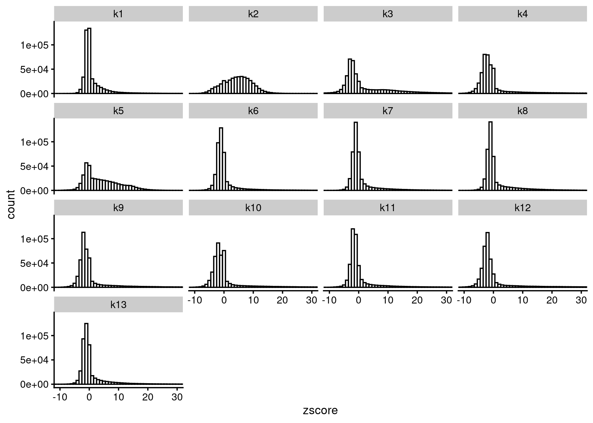

Motif and gene analysis using topic modeling results for Cusanovich et al (2018) scATAC-seq data
Kaixuan Luo
Last updated: 2021-01-05
Checks: 7 0
Knit directory: scATACseq-topics/
This reproducible R Markdown analysis was created with workflowr (version 1.6.2). The Checks tab describes the reproducibility checks that were applied when the results were created. The Past versions tab lists the development history.
Great! Since the R Markdown file has been committed to the Git repository, you know the exact version of the code that produced these results.
Great job! The global environment was empty. Objects defined in the global environment can affect the analysis in your R Markdown file in unknown ways. For reproduciblity it's best to always run the code in an empty environment.
The command set.seed(20200729) was run prior to running the code in the R Markdown file. Setting a seed ensures that any results that rely on randomness, e.g. subsampling or permutations, are reproducible.
Great job! Recording the operating system, R version, and package versions is critical for reproducibility.
Nice! There were no cached chunks for this analysis, so you can be confident that you successfully produced the results during this run.
Great job! Using relative paths to the files within your workflowr project makes it easier to run your code on other machines.
Great! You are using Git for version control. Tracking code development and connecting the code version to the results is critical for reproducibility.
The results in this page were generated with repository version fe8a870. See the Past versions tab to see a history of the changes made to the R Markdown and HTML files.
Note that you need to be careful to ensure that all relevant files for the analysis have been committed to Git prior to generating the results (you can use wflow_publish or wflow_git_commit). workflowr only checks the R Markdown file, but you know if there are other scripts or data files that it depends on. Below is the status of the Git repository when the results were generated:
Ignored files:
Ignored: .Rhistory
Ignored: .Rproj.user/
Untracked files:
Untracked: analysis/diff_count_Buenrostro2018_chomVAR_scPeaks.Rmd
Untracked: analysis/process_data_Buenrostro2018_Chen2019.Rmd
Untracked: analysis/single_cell_rnaseq_demo.Rmd
Untracked: output/clustering-Cusanovich2018.rds
Untracked: scripts/fit_all_models_Buenrostro_2018_chromVar_scPeaks_filtered.sbatch
Unstaged changes:
Modified: analysis/cisTopic_Buenrostro2018_chomVAR_scPeaks.Rmd
Modified: analysis/plots_Lareau2019_bonemarrow.Rmd
Modified: analysis/process_data_Buenrostro2018.Rmd
Modified: code/motif_analysis.R
Modified: scripts/diffcount_motif_analysis.R
Modified: scripts/fit_all_models_Buenrostro_2018.sbatch
Modified: scripts/fit_cisTopic_Buenrostro_2018_chromVAR_scPeaks.sh
Modified: scripts/postfit_Buenrostro2018.sh
Modified: scripts/postfit_gene_analysis.sbatch
Modified: scripts/postfit_motif_analysis.sbatch
Note that any generated files, e.g. HTML, png, CSS, etc., are not included in this status report because it is ok for generated content to have uncommitted changes.
These are the previous versions of the repository in which changes were made to the R Markdown (analysis/motif_gene_analysis_Cusanovich2018.Rmd) and HTML (docs/motif_gene_analysis_Cusanovich2018.html) files. If you've configured a remote Git repository (see ?wflow_git_remote), click on the hyperlinks in the table below to view the files as they were in that past version.
| File | Version | Author | Date | Message |
|---|---|---|---|---|
| Rmd | fe8a870 | kevinlkx | 2021-01-05 | updated motif result directory |
| html | 65a1f8d | kevinlkx | 2020-12-23 | Build site. |
| Rmd | 796a0a8 | kevinlkx | 2020-12-23 | wflow_publish("motif_gene_analysis_Cusanovich2018.Rmd") |
| html | b9aa0bf | kevinlkx | 2020-12-22 | Build site. |
| Rmd | 004a4b9 | kevinlkx | 2020-12-22 | first version of motif and gene analysis based on K = 13 topic model result |
Here we perform TF motif and gene analysis for the Cusanovich et al (2018) scATAC-seq result inferred from the multinomial topic model with \(k = 13\).
Load packages and some functions used in this analysis
library(Matrix)
library(dplyr)
library(ggplot2)
library(cowplot)
library(fastTopics)
library(dplyr)
library(tidyr)
library(DT)
library(reshape)Load data and topic model results
Load the data and the \(k = 13\) Poisson NMF fit results.
data.dir <- "/project2/mstephens/kevinluo/scATACseq-topics/data/Cusanovich_2018/processed_data/"
load(file.path(data.dir, "Cusanovich_2018.RData"))
rm(counts)out.dir <- "/project2/mstephens/kevinluo/scATACseq-topics/output/Cusanovich_2018"
fit <- readRDS(file.path(out.dir, "/fit-Cusanovich2018-scd-ex-k=13.rds"))$fit
fit_multinom <- poisson2multinom(fit)Visualize by Structure plot grouped by tissues
set.seed(10)
colors_topics <- c("#a6cee3","#1f78b4","#b2df8a","#33a02c","#fb9a99","#e31a1c",
"#fdbf6f","#ff7f00","#cab2d6","#6a3d9a","#ffff99","#b15928",
"gray")
rows <- sample(nrow(fit$L),4000)
samples$tissue <- as.factor(samples$tissue)
p.structure <- structure_plot(select(fit_multinom,loadings = rows),
grouping = samples[rows, "tissue"],n = Inf,gap = 40,
perplexity = 50,topics = 1:13,colors = colors_topics,
num_threads = 4,verbose = FALSE)
print(p.structure)
| Version | Author | Date |
|---|---|---|
| b9aa0bf | kevinlkx | 2020-12-22 |
Differential accessbility analysis of the ATAC-seq regions for the topics
Load results from differential accessbility analysis for the topics
diff_count_topics <- readRDS(file.path(out.dir, "/diffcount-Cusanovich2018-13topics.rds"))Distribution of z-scores
zscore_topics <- melt(diff_count_topics$Z)
colnames(zscore_topics) <- c("region", "topic", "zscore")
levels(zscore_topics$topic) <- colnames(diff_count_topics$Z)
z.quantile.99 <- apply(abs(diff_count_topics$Z), 2, quantile, 0.99)
cat("z-score 99% quantile: \n")
print(z.quantile.99)
p.hist.zscores <- ggplot(zscore_topics, aes(x=zscore)) +
geom_histogram(binwidth=1, color="black", fill="white") +
coord_cartesian(xlim = c(-10, 30)) + theme_cowplot(font_size = 10) +
facet_wrap(~ topic, ncol=4)
print(p.hist.zscores)
| Version | Author | Date |
|---|---|---|
| b9aa0bf | kevinlkx | 2020-12-22 |
# z-score 99% quantile:
# k1 k2 k3 k4 k5 k6 k7 k8
# 21.42992 31.48751 25.46082 25.97670 34.64418 37.09098 32.07250 39.65746
# k9 k10 k11 k12 k13
# 25.93102 15.88394 34.29782 39.80147 20.71928Motif enrichment analysis using HOMER
- Details about HOMER motif analysis:
- Motif enrichment result using regions with z-score above 99% quantile.
homer.dir <- paste0(out.dir, "/motifanalysis-Cusanovich2018-k=13-quantile/HOMER/")
cat(sprintf("Directory of motif analysis result: %s \n", homer.dir))
homer_res <- readRDS(file.path(homer.dir, "/homer_knownResults.rds"))
selected_regions <- readRDS(file.path(homer.dir, "/selected_regions.rds"))
cat("Number of regions selected for each topic: \n")
print(mapply(nrow, selected_regions[1:(length(selected_regions)-1)]))
top_motifs <- data.frame(matrix(nrow=10, ncol = ncol(diff_count_topics$Z)))
colnames(top_motifs) <- colnames(diff_count_topics$Z)
for (k in colnames(top_motifs)){
homer_motifs <- homer_res[[k]]
colnames(homer_motifs) <- c("Motif.name", "Consensus", "P-value", "Log.P-value", "q-value (Benjamini)",
"# of Target Sequences with Motif", "% of Target Sequences with Motif",
"# of Background Sequences with Motif", "% of Background Sequences with Motif")
homer_motifs <- homer_motifs %>% separate(Motif.name, c("motif", "experiment", "database"), "/")
top_motifs[,k] <- head(homer_motifs$motif, 10)
}
DT::datatable(data.frame(rank = 1:10, top_motifs), rownames = F,
caption = "Top 10 motifs enriched in each topic.")# Directory of motif analysis result: /project2/mstephens/kevinluo/scATACseq-topics/output/Cusanovich_2018/motifanalysis-Cusanovich2018-k=13-quantile/HOMER/
# Number of regions selected for each topic:
# k1 k2 k3 k4 k5 k6 k7 k8 k9 k10 k11 k12 k13
# 4363 4363 4363 4363 4363 4363 4363 4363 4363 4363 4363 4363 4363- Motif enrichment result using regions with zscore > 20.
homer.dir <- paste0(out.dir, "/motifanalysis-Cusanovich2018-k=13-zscore/HOMER/")
cat(sprintf("Directory of motif analysis result: %s \n", homer.dir))
homer_res <- readRDS(file.path(homer.dir, "/homer_knownResults.rds"))
selected_regions <- readRDS(file.path(homer.dir, "/selected_regions.rds"))
cat("Number of regions selected for each topic: \n")
print(mapply(nrow, selected_regions[1:(length(selected_regions)-1)]))
top_motifs <- data.frame(matrix(nrow=10, ncol = ncol(diff_count_topics$Z)))
colnames(top_motifs) <- colnames(diff_count_topics$Z)
for (k in colnames(top_motifs)){
homer_motifs <- homer_res[[k]]
colnames(homer_motifs) <- c("Motif.name", "Consensus", "P-value", "Log.P-value", "q-value (Benjamini)",
"# of Target Sequences with Motif", "% of Target Sequences with Motif",
"# of Background Sequences with Motif", "% of Background Sequences with Motif")
homer_motifs <- homer_motifs %>% separate(Motif.name, c("motif", "experiment", "database"), "/")
top_motifs[,k] <- head(homer_motifs$motif, 10)
}
DT::datatable(data.frame(rank = 1:10, top_motifs), rownames = F,
caption = "Top 10 motifs enriched in each topic.")# Directory of motif analysis result: /project2/mstephens/kevinluo/scATACseq-topics/output/Cusanovich_2018/motifanalysis-Cusanovich2018-k=13-zscore/HOMER/
# Number of regions selected for each topic:
# k1 k2 k3 k4 k5 k6 k7 k8 k9 k10 k11 k12 k13
# 5199 9695 8446 9752 17209 17758 12988 22940 8024 747 27044 20069 5467Top genes
Gene body model
Gene scores were computed using the gene score model (model 42) in the archR paper with some modifications. This model uses bi-directional exponential decays from the gene TSS (extended upstream by 5 kb by default) and the gene transcription termination site (TTS). Note: the current version of the function does not account for neighboring gene boundaries.
- Gene body model, normalized by the l2 norm of weights, as in Stouffer's z-score method.
gene.dir <- paste0(out.dir, "/geneanalysis-Cusanovich2018-k=13-genebody-l2")
cat(sprintf("Directory of gene analysis result: %s \n", gene.dir))
load(file.path(gene.dir, "genescores_gsea.Rdata"))
top_genes <- data.frame(matrix(nrow=10, ncol = ncol(gene_scores)))
colnames(top_genes) <- colnames(gene_scores)
rownames(gene_scores) <- genes[match(rownames(gene_scores), genes$ENSEMBL), "SYMBOL"]
for (k in colnames(top_genes)){
top_genes[,k] <- rownames(gene_scores)[head(order(abs(gene_scores[,k]), decreasing=TRUE), 10)]
}
DT::datatable(data.frame(rank = 1:10, top_genes), rownames = F,
caption = "Top 10 genes in each topic.")# Directory of gene analysis result: /project2/mstephens/kevinluo/scATACseq-topics/output/Cusanovich_2018/geneanalysis-Cusanovich2018-k=13-genebody-l2- Gene body model, normalized by the total weights (i.e. weighted averge).
gene.dir <- paste0(out.dir, "/geneanalysis-Cusanovich2018-k=13-genebody-sum")
cat(sprintf("Directory of gene analysis result: %s \n", gene.dir))
load(file.path(gene.dir, "genescores_gsea.Rdata"))
top_genes <- data.frame(matrix(nrow=10, ncol = ncol(gene_scores)))
colnames(top_genes) <- colnames(gene_scores)
rownames(gene_scores) <- genes[match(rownames(gene_scores), genes$ENSEMBL), "SYMBOL"]
for (k in colnames(top_genes)){
top_genes[,k] <- rownames(gene_scores)[head(order(abs(gene_scores[,k]), decreasing=TRUE), 10)]
}
DT::datatable(data.frame(rank = 1:10, top_genes), rownames = F,
caption = "Top 10 genes in each topic.")# Directory of gene analysis result: /project2/mstephens/kevinluo/scATACseq-topics/output/Cusanovich_2018/geneanalysis-Cusanovich2018-k=13-genebody-sumTSS model
Gene scores were computed using TSS based method as in Lareau et al. Nature Biotech, 2019 as well as the model 21 in archR paper. This model weights chromatin accessibility around gene promoters by using bi-directional exponential decays from the TSS.
- TSS model, normalized by the l2 norm of weights, as in Stouffer's z-score method.
gene.dir <- paste0(out.dir, "/geneanalysis-Cusanovich2018-k=13-TSS-l2")
cat(sprintf("Directory of gene analysis result: %s \n", gene.dir))
load(file.path(gene.dir, "genescores_gsea.Rdata"))
top_genes <- data.frame(matrix(nrow=10, ncol = ncol(gene_scores)))
colnames(top_genes) <- colnames(gene_scores)
rownames(gene_scores) <- genes[match(rownames(gene_scores), genes$ENSEMBL), "SYMBOL"]
for (k in colnames(top_genes)){
top_genes[,k] <- rownames(gene_scores)[head(order(abs(gene_scores[,k]), decreasing=TRUE), 10)]
}
DT::datatable(data.frame(rank = 1:10, top_genes), rownames = F,
caption = "Top 10 genes in each topic.")# Directory of gene analysis result: /project2/mstephens/kevinluo/scATACseq-topics/output/Cusanovich_2018/geneanalysis-Cusanovich2018-k=13-TSS-l2- TSS model, normalized by the total weights (i.e. weighted averge).
gene.dir <- paste0(out.dir, "/geneanalysis-Cusanovich2018-k=13-TSS-sum")
cat(sprintf("Directory of gene analysis result: %s \n", gene.dir))
load(file.path(gene.dir, "genescores_gsea.Rdata"))
top_genes <- data.frame(matrix(nrow=10, ncol = ncol(gene_scores)))
colnames(top_genes) <- colnames(gene_scores)
rownames(gene_scores) <- genes[match(rownames(gene_scores), genes$ENSEMBL), "SYMBOL"]
for (k in colnames(top_genes)){
top_genes[,k] <- rownames(gene_scores)[head(order(abs(gene_scores[,k]), decreasing=TRUE), 10)]
}
DT::datatable(data.frame(rank = 1:10, top_genes), rownames = F,
caption = "Top 10 genes in each topic.")# Directory of gene analysis result: /project2/mstephens/kevinluo/scATACseq-topics/output/Cusanovich_2018/geneanalysis-Cusanovich2018-k=13-TSS-sumGene-set enrichment analysis (GSEA)
- Gene body model, normalized by the l2 norm of weights, as in Stouffer's z-score method.
gene.dir <- paste0(out.dir, "/geneanalysis-Cusanovich2018-k=13-genebody-l2")
cat(sprintf("Directory of gene analysis result: %s \n", gene.dir))
load(file.path(gene.dir, "genescores_gsea.Rdata"))
top_pathways_up <- top_pathways_down <- data.frame(matrix(nrow=10, ncol = ncol(gsea_res$pval)))
colnames(top_pathways_up) <- colnames(top_pathways_down) <- colnames(gsea_res$pval)
for (k in 1:ncol(gsea_res$pval)){
gsea_topic <- data.frame(pathway = rownames(gsea_res$pval),
pval = gsea_res$pval[,k],
log2err = gsea_res$log2err[,k],
ES = gsea_res$ES[,k],
NES = gsea_res$NES[,k])
gsea_up <- gsea_topic[gsea_topic$ES > 0,]
top_IDs_up <- as.character(gsea_up[head(order(gsea_up$pval), 10), "pathway"])
top_pathways_up[,k] <- gene_set_info[match(top_IDs_up, gene_set_info$id),c("name", "id")] %>%
unite("pathway", c("name", "id"), sep = ".", remove = TRUE)
gsea_down <- gsea_topic[gsea_topic$ES < 0,]
top_IDs_down <- as.character(gsea_down[head(order(gsea_down$pval), 10), "pathway"])
top_pathways_down[,k] <- gene_set_info[match(top_IDs_down, gene_set_info$id),c("name", "id")] %>%
unite("pathway", c("name", "id"), sep = ".", remove = TRUE)
}
DT::datatable(data.frame(rank = 1:10, top_pathways_up), rownames = F,
caption = "Top 10 pathways enriched at the top of the gene rank list.")# Directory of gene analysis result: /project2/mstephens/kevinluo/scATACseq-topics/output/Cusanovich_2018/geneanalysis-Cusanovich2018-k=13-genebody-l2- Gene body model, normalized by the total weights (i.e. weighted averge).
gene.dir <- paste0(out.dir, "/geneanalysis-Cusanovich2018-k=13-genebody-sum")
cat(sprintf("Directory of gene analysis result: %s \n", gene.dir))
load(file.path(gene.dir, "genescores_gsea.Rdata"))
top_pathways_up <- top_pathways_down <- data.frame(matrix(nrow=10, ncol = ncol(gsea_res$pval)))
colnames(top_pathways_up) <- colnames(top_pathways_down) <- colnames(gsea_res$pval)
for (k in 1:ncol(gsea_res$pval)){
gsea_topic <- data.frame(pathway = rownames(gsea_res$pval),
pval = gsea_res$pval[,k],
log2err = gsea_res$log2err[,k],
ES = gsea_res$ES[,k],
NES = gsea_res$NES[,k])
gsea_up <- gsea_topic[gsea_topic$ES > 0,]
top_IDs_up <- as.character(gsea_up[head(order(gsea_up$pval), 10), "pathway"])
top_pathways_up[,k] <- gene_set_info[match(top_IDs_up, gene_set_info$id),c("name", "id")] %>%
unite("pathway", c("name", "id"), sep = ".", remove = TRUE)
gsea_down <- gsea_topic[gsea_topic$ES < 0,]
top_IDs_down <- as.character(gsea_down[head(order(gsea_down$pval), 10), "pathway"])
top_pathways_down[,k] <- gene_set_info[match(top_IDs_down, gene_set_info$id),c("name", "id")] %>%
unite("pathway", c("name", "id"), sep = ".", remove = TRUE)
}
DT::datatable(data.frame(rank = 1:10, top_pathways_up), rownames = F,
caption = "Top 10 pathways enriched at the top of the gene rank list.")# Directory of gene analysis result: /project2/mstephens/kevinluo/scATACseq-topics/output/Cusanovich_2018/geneanalysis-Cusanovich2018-k=13-genebody-sum- TSS model, normalized by the l2 norm of weights, as in Stouffer's z-score method.
gene.dir <- paste0(out.dir, "/geneanalysis-Cusanovich2018-k=13-TSS-l2")
cat(sprintf("Directory of gene analysis result: %s \n", gene.dir))
load(file.path(gene.dir, "genescores_gsea.Rdata"))
top_pathways_up <- top_pathways_down <- data.frame(matrix(nrow=10, ncol = ncol(gsea_res$pval)))
colnames(top_pathways_up) <- colnames(top_pathways_down) <- colnames(gsea_res$pval)
for (k in 1:ncol(gsea_res$pval)){
gsea_topic <- data.frame(pathway = rownames(gsea_res$pval),
pval = gsea_res$pval[,k],
log2err = gsea_res$log2err[,k],
ES = gsea_res$ES[,k],
NES = gsea_res$NES[,k])
gsea_up <- gsea_topic[gsea_topic$ES > 0,]
top_IDs_up <- as.character(gsea_up[head(order(gsea_up$pval), 10), "pathway"])
top_IDs_up <- gene_set_info[match(top_IDs_up, gene_set_info$id),c("name", "id")]
top_pathways_up[,k] <- paste0(top_IDs_up$name, "(", top_IDs_up$id, ")")
gsea_down <- gsea_topic[gsea_topic$ES < 0,]
top_IDs_down <- as.character(gsea_down[head(order(gsea_down$pval), 10), "pathway"])
top_IDs_down <- gene_set_info[match(top_IDs_down, gene_set_info$id),c("name", "id")]
top_pathways_down[,k] <- paste0(top_IDs_down$name, "(", top_IDs_down$id, ")")
}
DT::datatable(data.frame(rank = 1:10, top_pathways_up), rownames = F,
caption = "Top 10 pathways enriched at the top of the gene rank list.")# Directory of gene analysis result: /project2/mstephens/kevinluo/scATACseq-topics/output/Cusanovich_2018/geneanalysis-Cusanovich2018-k=13-TSS-l2- TSS model, normalized by the total weights (i.e. weighted averge).
gene.dir <- paste0(out.dir, "/geneanalysis-Cusanovich2018-k=13-TSS-sum")
cat(sprintf("Directory of gene analysis result: %s \n", gene.dir))
load(file.path(gene.dir, "genescores_gsea.Rdata"))
top_pathways_up <- top_pathways_down <- data.frame(matrix(nrow=10, ncol = ncol(gsea_res$pval)))
colnames(top_pathways_up) <- colnames(top_pathways_down) <- colnames(gsea_res$pval)
for (k in 1:ncol(gsea_res$pval)){
gsea_topic <- data.frame(pathway = rownames(gsea_res$pval),
pval = gsea_res$pval[,k],
log2err = gsea_res$log2err[,k],
ES = gsea_res$ES[,k],
NES = gsea_res$NES[,k])
gsea_up <- gsea_topic[gsea_topic$ES > 0,]
top_IDs_up <- as.character(gsea_up[head(order(gsea_up$pval), 10), "pathway"])
top_IDs_up <- gene_set_info[match(top_IDs_up, gene_set_info$id),c("name", "id")]
top_pathways_up[,k] <- paste0(top_IDs_up$name, "(", top_IDs_up$id, ")")
gsea_down <- gsea_topic[gsea_topic$ES < 0,]
top_IDs_down <- as.character(gsea_down[head(order(gsea_down$pval), 10), "pathway"])
top_IDs_down <- gene_set_info[match(top_IDs_down, gene_set_info$id),c("name", "id")]
top_pathways_down[,k] <- paste0(top_IDs_down$name, "(", top_IDs_down$id, ")")
}
DT::datatable(data.frame(rank = 1:10, top_pathways_up), rownames = F,
caption = "Top 10 pathways enriched at the top of the gene rank list.")# Directory of gene analysis result: /project2/mstephens/kevinluo/scATACseq-topics/output/Cusanovich_2018/geneanalysis-Cusanovich2018-k=13-TSS-sum
sessionInfo()# R version 3.6.1 (2019-07-05)
# Platform: x86_64-pc-linux-gnu (64-bit)
# Running under: Scientific Linux 7.4 (Nitrogen)
#
# Matrix products: default
# BLAS/LAPACK: /software/openblas-0.2.19-el7-x86_64/lib/libopenblas_haswellp-r0.2.19.so
#
# locale:
# [1] LC_CTYPE=en_US.UTF-8 LC_NUMERIC=C
# [3] LC_TIME=en_US.UTF-8 LC_COLLATE=en_US.UTF-8
# [5] LC_MONETARY=en_US.UTF-8 LC_MESSAGES=en_US.UTF-8
# [7] LC_PAPER=en_US.UTF-8 LC_NAME=C
# [9] LC_ADDRESS=C LC_TELEPHONE=C
# [11] LC_MEASUREMENT=en_US.UTF-8 LC_IDENTIFICATION=C
#
# attached base packages:
# [1] stats graphics grDevices utils datasets methods base
#
# other attached packages:
# [1] reshape_0.8.8 DT_0.16 tidyr_1.1.2 fastTopics_0.4-6
# [5] cowplot_1.1.0 ggplot2_3.3.2 dplyr_1.0.2 Matrix_1.2-18
#
# loaded via a namespace (and not attached):
# [1] ggrepel_0.9.0 Rcpp_1.0.5 lattice_0.20-41 prettyunits_1.1.1
# [5] rprojroot_2.0.2 digest_0.6.27 plyr_1.8.6 R6_2.5.0
# [9] MatrixModels_0.4-1 evaluate_0.14 coda_0.19-4 httr_1.4.2
# [13] pillar_1.4.7 rlang_0.4.9 progress_1.2.2 lazyeval_0.2.2
# [17] data.table_1.13.4 irlba_2.3.3 SparseM_1.78 whisker_0.4
# [21] rmarkdown_2.6 labeling_0.4.2 Rtsne_0.15 stringr_1.4.0
# [25] htmlwidgets_1.5.3 munsell_0.5.0 compiler_3.6.1 httpuv_1.5.4
# [29] xfun_0.19 pkgconfig_2.0.3 mcmc_0.9-7 htmltools_0.5.0
# [33] tidyselect_1.1.0 tibble_3.0.4 workflowr_1.6.2 quadprog_1.5-8
# [37] matrixStats_0.57.0 viridisLite_0.3.0 crayon_1.3.4 conquer_1.0.2
# [41] withr_2.3.0 later_1.1.0.1 MASS_7.3-53 grid_3.6.1
# [45] jsonlite_1.7.2 gtable_0.3.0 lifecycle_0.2.0 git2r_0.27.1
# [49] magrittr_2.0.1 scales_1.1.1 RcppParallel_5.0.2 stringi_1.5.3
# [53] farver_2.0.3 fs_1.3.1 promises_1.1.1 ellipsis_0.3.1
# [57] generics_0.1.0 vctrs_0.3.6 tools_3.6.1 glue_1.4.2
# [61] purrr_0.3.4 crosstalk_1.1.0.1 hms_0.5.3 yaml_2.2.1
# [65] colorspace_2.0-0 plotly_4.9.2.1 knitr_1.30 quantreg_5.75
# [69] MCMCpack_1.4-9